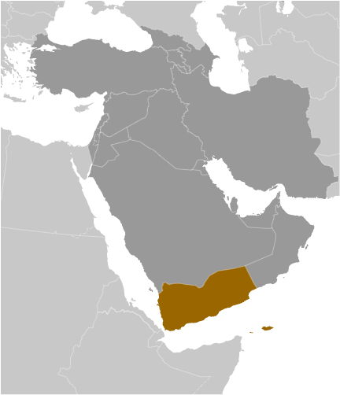
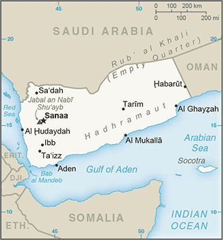
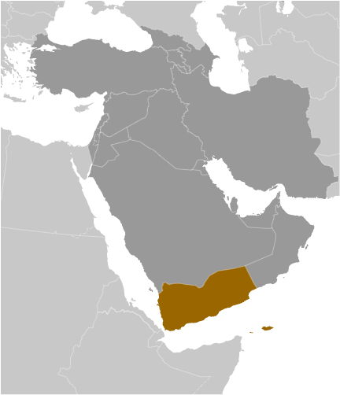
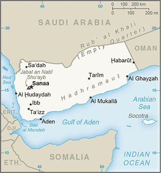

Middle East :: YEMEN
Introduction :: YEMEN
-
North Yemen became independent from the Ottoman Empire in 1918. The British, who had set up a protectorate area around the southern port of Aden in the 19th century, withdrew in 1967 from what became South Yemen. Three years later, the southern government adopted a Marxist orientation. The massive exodus of hundreds of thousands of Yemenis from the south to the north contributed to two decades of hostility between the states. The two countries were formally unified as the Republic of Yemen in 1990. A southern secessionist movement and brief civil war in 1994 was quickly subdued. In 2000, Saudi Arabia and Yemen agreed to delineate their border. Fighting in the northwest between the government and the Huthis, a Zaydi Shia Muslim minority, continued intermittently from 2004 to 2010. The southern secessionist movement was revitalized in 2007.Public rallies in Sana'a against then President SALIH - inspired by similar demonstrations in Tunisia and Egypt - slowly built momentum starting in late January 2011 fueled by complaints over high unemployment, poor economic conditions, and corruption. By the following month, some protests had resulted in violence, and the demonstrations had spread to other major cities. By March the opposition had hardened its demands and was unifying behind calls for SALIH's immediate ouster. In April 2011, the Gulf Cooperation Council (GCC), in an attempt to mediate the crisis in Yemen, proposed the GGC Initiative, an agreement in which the president would step down in exchange for immunity from prosecution. SALIH's refusal to sign an agreement led to further violence. The UN Security Council passed Resolution 2014 in October 2011 calling for an end to the violence and completing a power transfer deal. In November 2011, SALIH signed the GCC Initiative to step down and to transfer some of his powers to Vice President Abd Rabuh Mansur HADI. Following HADI's uncontested election victory in February 2012, SALIH formally transferred his powers. In accordance with the GCC initiative, Yemen launched a National Dialogue Conference (NDC) in March 2013 to discuss key constitutional, political, and social issues. HADI concluded the NDC in January 2014 and planned to begin implementing subsequent steps in the transition process, including constitutional drafting, a constitutional referendum, and national elections.The Huthis, perceiving their grievances were not addressed in the NDC, joined forces with SALIH and expanded their influence in northwestern Yemen, culminating in a major offensive against military units and rival tribes and enabling their forces to overrun the capital, Sanaa, in September 2014. In January 2015, the Huthis surrounded the presidential palace, HADI's residence, and key government facilities, prompting HADI and the cabinet to submit their resignations. HADI fled to Aden in February 2015 and rescinded his resignation. He subsequently escaped to Oman and then moved to Saudi Arabia and asked the GCC to intervene militarily in Yemen to protect the legitimate government from the Huthis. In March, Saudi Arabia assembled a coalition of Arab militaries and began airstrikes against the Huthis and Huthi-affiliated forces. Ground fighting between Huthi-aligned forces and resistance groups backed by the Saudi-led coalition continued through 2016. The UN brokered a cessation of hostilities (COH) that reduced airstrikes and fighting across the country for several months in mid-2016. Meanwhile, UN-backed peace talks in Kuwait broke down in August 2016 without agreement. The conflict escalated, and subsequent attempts to declare a COH or resume peace talks have failed. The Huthis and SALIH’s political party announced a Supreme Political Council in August 2016 and a National Salvation Government, including a prime minister and several dozen cabinet members, in November 2016, to govern in Sanaa and further challenge the legitimacy of HADI’s government.
Geography :: YEMEN
-
Middle East, bordering the Arabian Sea, Gulf of Aden, and Red Sea, between Oman and Saudi Arabia15 00 N, 48 00 EMiddle Easttotal: 527,968 sq kmland: 527,968 sq kmwater: 0 sq kmnote: includes Perim, Socotra, the former Yemen Arab Republic (YAR or North Yemen), and the former People's Democratic Republic of Yemen (PDRY or South Yemen)country comparison to the world: 51almost four times the size of Alabama; slightly larger than twice the size of Wyomingtotal: 1,601 kmborder countries (2): Oman 294 km, Saudi Arabia 1,307 km1,906 kmterritorial sea: 12 nmcontiguous zone: 24 nmexclusive economic zone: 200 nmcontinental shelf: 200 nm or to the edge of the continental marginmostly desert; hot and humid along west coast; temperate in western mountains affected by seasonal monsoon; extraordinarily hot, dry, harsh desert in eastnarrow coastal plain backed by flat-topped hills and rugged mountains; dissected upland desert plains in center slope into the desert interior of the Arabian Peninsulamean elevation: 999 melevation extremes: lowest point: Arabian Sea 0 mhighest point: Jabal an Nabi Shu'ayb 3,666 mpetroleum, fish, rock salt, marble; small deposits of coal, gold, lead, nickel, and copper; fertile soil in westagricultural land: 44.5%arable land 2.2%; permanent crops 0.6%; permanent pasture 41.7%forest: 1%other: 54.5% (2011 est.)6,800 sq km (2012)the vast majority of the population is found in the Asir Mountains (part of the larger Sarawat Mountain system), located in the far western region of the countrysandstorms and dust storms in summervolcanism: limited volcanic activity; Jebel at Tair (Jabal al-Tair, Jebel Teir, Jabal al-Tayr, Jazirat at-Tair) (244 m), which forms an island in the Red Sea, erupted in 2007 after awakening from dormancy; other historically active volcanoes include Harra of Arhab, Harras of Dhamar, Harra es-Sawad, and Jebel Zubair, although many of these have not erupted in over a centurylimited natural freshwater resources; inadequate supplies of potable water; overgrazing; soil erosion; desertificationparty to: Biodiversity, Climate Change, Climate Change-Kyoto Protocol, Desertification, Endangered Species, Environmental Modification, Hazardous Wastes, Law of the Sea, Ozone Layer Protectionsigned, but not ratified: none of the selected agreementsstrategic location on Bab el Mandeb, the strait linking the Red Sea and the Gulf of Aden, one of world's most active shipping lanes
People and Society :: YEMEN
-
28,036,829 (July 2017 est.)country comparison to the world: 48noun: Yemeni(s)adjective: Yemenipredominantly Arab; but also Afro-Arab, South Asians, EuropeansArabic (official)note: a distinct Socotri language is widely used on Socotra Island and Archipelago; Mahri is still fairly widely spoken in eastern YemenMuslim 99.1% (official; virtually all are citizens, an estimated 65% are Sunni and 35% are Shia), other 0.9% (includes Jewish, Baha'i, Hindu, and Christian; many are refugees or temporary foreign residents) (2010 est.)0-14 years: 39.83% (male 5,681,084/female 5,485,959)15-24 years: 21.21% (male 3,015,232/female 2,930,329)25-54 years: 32.27% (male 4,625,967/female 4,422,418)55-64 years: 3.94% (male 506,759/female 598,973)65 years and over: 2.75% (male 353,953/female 416,155) (2017 est.)total dependency ratio: 76.8youth dependency ratio: 71.7elderly dependency ratio: 5.1potential support ratio: 19.8 (2015 est.)total: 19.5 yearsmale: 19.3 yearsfemale: 19.6 years (2017 est.)country comparison to the world: 2012.28% (2017 est.)country comparison to the world: 3528.4 births/1,000 population (2017 est.)country comparison to the world: 436 deaths/1,000 population (2017 est.)country comparison to the world: 1660.4 migrant(s)/1,000 population (2017 est.)country comparison to the world: 65the vast majority of the population is found in the Asir Mountains (part of the larger Sarawat Mountain system), located in the far western region of the countryurban population: 35.8% of total population (2017)rate of urbanization: 3.76% annual rate of change (2015-20 est.)SANAA (capital) 2.962 million; Aden 882,000 (2015)at birth: 1.05 male(s)/female0-14 years: 1.04 male(s)/female15-24 years: 1.03 male(s)/female25-54 years: 1.05 male(s)/female55-64 years: 0.85 male(s)/female65 years and over: 0.87 male(s)/femaletotal population: 1.02 male(s)/female (2016 est.)21.4 yearsmedian age at first birth among women 25-29 (2013 est.)385 deaths/100,000 live births (2015 est.)country comparison to the world: 30total: 46 deaths/1,000 live birthsmale: 50.1 deaths/1,000 live birthsfemale: 41.7 deaths/1,000 live births (2017 est.)country comparison to the world: 38total population: 65.9 yearsmale: 63.7 yearsfemale: 68.2 years (2017 est.)country comparison to the world: 1763.63 children born/woman (2017 est.)country comparison to the world: 4133.5% (2013)5.6% of GDP (2014)country comparison to the world: 1200.31 physicians/1,000 population (2014)0.7 beds/1,000 population (2012)improved:urban: 72% of populationrural: 46.5% of populationtotal: 54.9% of populationunimproved:urban: 28% of populationrural: 53.5% of populationtotal: 45.1% of population (2012 est.)improved:urban: 92.5% of populationrural: 34.1% of populationtotal: 53.3% of populationunimproved:urban: 7.5% of populationrural: 65.9% of populationtotal: 46.7% of population (2012 est.)<.1% (2016 est.)9,900 (2016 est.)country comparison to the world: 95<500 (2016 est.)degree of risk: highfood or waterborne diseases: bacterial diarrhea, hepatitis A, and typhoid fevervectorborne diseases: dengue fever and malariawater contact disease: schistosomiasis (2016)17.1% (2016)country comparison to the world: 12039.9% (2013)country comparison to the world: 34.6% of GDP (2008)country comparison to the world: 67definition: age 15 and over can read and writetotal population: 70.1%male: 85.1%female: 55% (2015 est.)total: 9 yearsmale: 10 yearsfemale: 8 years (2011)total: 33.7%male: 26%female: 74% (2010 est.)country comparison to the world: 22
Government :: YEMEN
-
conventional long form: Republic of Yemenconventional short form: Yemenlocal long form: Al Jumhuriyah al Yamaniyahlocal short form: Al Yamanformer: Yemen Arab Republic [Yemen (Sanaa) or North Yemen] and People's Democratic Republic of Yemen [Yemen (Aden) or South Yemen]etymology: name derivation remains unclear but may come from the Arab term "yumn" (happiness) and be related to the region's classical name "Arabia Felix" (Fertile or Happy Arabia); the Romans referred to the rest of the peninsula as "Arabia Deserta" (Deserted Arabia)in transitionname: Sanaageographic coordinates: 15 21 N, 44 12 Etime difference: UTC+3 (8 hours ahead of Washington, DC, during Standard Time)22 governorates (muhafazat, singular - muhafazah); Abyan, 'Adan (Aden), Ad Dali', Al Bayda', Al Hudaydah, Al Jawf, Al Mahrah, Al Mahwit, Amanat al 'Asimah (Sanaa City), 'Amran, Arkhabil Suqutra (Socotra Archipelago), Dhamar, Hadramawt, Hajjah, Ibb, Lahij, Ma'rib, Raymah, Sa'dah, San'a' (Sanaa), Shabwah, Ta'izz22 May 1990 (Republic of Yemen was established with the merger of the Yemen Arab Republic [Yemen (Sanaa) or North Yemen] and the Marxist-dominated People's Democratic Republic of Yemen [Yemen (Aden) or South Yemen]); note - previously North Yemen became independent in November 1918 (from the Ottoman Empire) and became a republic with the overthrow of the theocratic Imamate in 1962; South Yemen became independent on 30 November 1967 (from the UK)Unification Day, 22 May (1990)history: adopted by referendum 16 May 1991 (following unification); amended several times, last in 2009; note - after the National Dialogue ended in January 2015, a presidentially appointed Constitutional Drafting Committee worked to prepare a new draft constitution that was expected to be put to a national referendum before being adopted; however, the president’s resignation in January 2015 and subsequent conflict have interrupted the process (2016)mixed legal system of Islamic law, Napoleonic law, English common law, and customary lawhas not submitted an ICJ jurisdiction declaration; non-party state to the ICCtcitizenship by birth: nocitizenship by descent only: the father must be a citizen of Yemen; if the father is unknown, the mother must be a citizendual citizenship recognized: noresidency requirement for naturalization: 10 years18 years of age; universalchief of state: President Abd Rabuh Mansur HADI (since 21 February 2012); Vice President Ali Mohsin al-AHMAR, Gen. (since 3 April 2016)head of government: Prime Minister Ahmad Obaid bin DAGHIR (since 3 April 2016)cabinet: appointed by the presidentelections/appointments: president directly elected by absolute majority popular vote in 2 rounds if needed for a 7-year term (eligible for a second term); election last held on 21 February 2012 (next election NA); note - a special election was held on 21 February 2012 to remove Ali Abdallah SALIH under the terms of a Gulf Cooperation Council-mediated deal during the political crisis of 2011; vice president appointed by the president; prime minister appointed by the presidentelection results: Abd Rabuh Mansur HADI (GPC) elected as a consensus president with about 50% popular participation; no other candidatesdescription: bicameral Parliament or Majlis consists of the Shura Council or Majlis Alshoora (111 seats; members appointed by the president; member tenure NA) and the House of Representatives or Majlis al Nuwaab (301 seats; members directly elected in single-seat constituencies by simple majority vote to serve 6-year terms)elections: last held on 27 April 2003 (next scheduled for April 2009 but postponed indefinitely)election results: House of Representatives percent of vote by party - GPC 58.0%, Islah 22.6%, YSP 3.8%, Unionist Party 1.9%, other 13.7%; seats by party - GPC 238, Islah 46, YSP 8, Nasserist Unionist Party 3, National Arab Socialist Ba'ath Party 2, independent 4highest court(s): Supreme Court (consists of the president of the Court, 2 deputies, and nearly 50 judges; court organized into constitutional, civil, commercial, family, administrative, criminal, military, and appeals scrutiny divisions)judge selection and term of office: judges appointed by the Supreme Judicial Council, chaired by the president of the republic and consisting of 10 high-ranking judicial officers; judges appointed for life with mandatory retirement at age 65subordinate courts: appeal courts; district or first instance courts; commercial courtsGeneral People's Congress or GPC [Ali Abdallah SALIH]National Arab Socialist Ba'ath Party [Qassem Salam SAID]Nasserist Unionist People's Organization [Abdulmalik al-MEKHLAFI]Yemeni Reform Grouping or Islah [Muhammed Abdallah al-YADUMI]Yemeni Socialist Party or YSP [Dr. Abd al-Rahman Umar al-SAQQAF]HuthisMuslim BrotherhoodWomen National Committeeother: conservative tribal groups; southern secessionist groups; al-Qa'ida in the Arabian Peninsula (AQAP)AFESD, AMF, CAEU, CD, EITI (temporarily suspended), FAO, G-77, IAEA, IBRD, ICAO, ICRM, IDA, IDB, IFAD, IFC, IFRCS, ILO, IMF, IMO, IMSO, Interpol, IOC, IOM, IPU, ISO, ITSO, ITU, ITUC (NGOs), LAS, MIGA, MINURSO, MINUSMA, MONUSCO, NAM, OAS (observer), OIC, OPCW, UN, UNAMID, UNCTAD, UNESCO, UNHCR, UNIDO, UNISFA, UNMIL, UNMIS, UNOCI, UNWTO, UPU, WCO, WFTU (NGOs), WHO, WIPO, WMO, WTOchief of mission: Ambassador Ahmad Awadh BIN MUBARAK (since 3 August 2015)chancery: 2319 Wyoming Avenue NW, Washington, DC 20008telephone: [1] (202) 965-4760FAX: [1] (202) 337-2017chief of mission: Ambassador Matthew H. TUELLER (since 10 June 2014)embassy: Sa'awan Street, Sanaa; note - Embassy closed in March 2015; relocated to Jeddah, Saudia Arabiamailing address: P. O. Box 22347, Sanaatelephone: [967] (1) 755-2000 ext. 2153 or 2266FAX: [967] (1) 303-182three equal horizontal bands of red (top), white, and black; the band colors derive from the Arab Liberation flag and represent oppression (black), overcome through bloody struggle (red), to be replaced by a bright future (white)note: similar to the flag of Syria, which has two green stars in the white band, and of Iraq, which has an Arabic inscription centered in the white band; also similar to the flag of Egypt, which has a heraldic eagle centered in the white bandgolden eagle; national colors: red, white, blackname: "al-qumhuriyatu l-muttahida" (United Republic)lyrics/music: Abdullah Abdulwahab NOA'MAN/Ayyoab Tarish ABSInote: adopted 1990; the music first served as the anthem for South Yemen before unification with North Yemen in 1990
Economy :: YEMEN
-
Yemen is a low-income country that faces difficult long-term challenges to stabilizing and growing its economy, and the current conflict has only exacerbated those issues. The ongoing war has halted Yemen’s exports, pressured the currency’s exchange rate, accelerated inflation, severely limited food and fuel imports, and caused widespread damage to infrastructure. More than 80% of the population is in need of humanitarian assistance and over half are food insecure.Prior to the start of the conflict in 2014, Yemen was highly dependent on declining oil and gas resources for revenue. Oil and gas earnings accounted for roughly 25% of GDP and 65% of government revenue. The Yemeni Government regularly faced annual budget shortfalls and tried to diversify the Yemeni economy through a reform program designed to bolster non-oil sectors of the economy and foreign investment. In July 2014, the government continued reform efforts by eliminating some fuel subsidies and in August 2014, the IMF approved a three-year, $570 million Extended Credit Facility for Yemen.However, the conflict that began in 2014 stalled these reform efforts and ongoing fighting continues to accelerate the country’s economic decline. In September 2016, President HADI announced the move of the main branch of Central Bank of Yemen from Sanaa to Aden where his government could exert greater control over the central bank’s dwindling resources. Regardless of which group controls the main branch, the central bank system is struggling to function. Yemen’s Central Bank’s foreign reserves, which stood at roughly $5.2 billion prior to the conflict, have declined to negligible amounts. The Central Bank can no longer fully support imports of critical goods or the country’s exchange rate. The country also is facing a growing liquidity crisis and rising inflation. The private sector is hemorrhaging, with almost all businesses making substantial layoffs. Access to food and other critical commodities such as medical equipment is limited across the country due to security issues on the ground. The Social Welfare Fund, a cash transfer program for Yemen’s neediest, is no longer operational and has not made any disbursements since late 2014.Yemen will require significant international assistance during and after the protracted conflict to stabilize its economy. Long-term challenges include a high population growth rate, high unemployment, declining water resources, and severe food scarcity.$69.17 billion (2016 est.)$75.7 billion (2015 est.)$104.1 billion (2014 est.)note: data are in 2016 dollarscountry comparison to the world: 97$27.32 billion (2016 est.)-9.8% (2016 est.)-28.1% (2015 est.)-0.2% (2014 est.)country comparison to the world: 218$2,400 (2016 est.)$2,700 (2015 est.)$3,900 (2014 est.)note: data are in 2016 dollarscountry comparison to the world: 200-4.1% of GDP (2016 est.)-3.7% of GDP (2015 est.)6.2% of GDP (2014 est.)country comparison to the world: 181household consumption: 115.2%government consumption: 9.8%investment in fixed capital: 1.1%investment in inventories: -7%exports of goods and services: 1.3%imports of goods and services: -20.5% (2016 est.)agriculture: 21.8%industry: 9.8%services: 68.4% (2016 est.)grain, fruits, vegetables, pulses, qat, coffee, cotton; dairy products, livestock (sheep, goats, cattle, camels), poultry; fishcrude oil production and petroleum refining; small-scale production of cotton textiles, leather goods; food processing; handicrafts; aluminum products; cement; commercial ship repair; natural gas production-48.8% (2016 est.)country comparison to the world: 2027.418 million (2016 est.)country comparison to the world: 66note: most people are employed in agriculture and herding; services, construction, industry, and commerce account for less than one-fourth of the labor force27% (2014 est.)35% (2003 est.)country comparison to the world: 19754% (2014 est.)lowest 10%: 2.6%highest 10%: 30.3% (2008 est.)37.9 (2009 est.)37.3 (1999 est.)country comparison to the world: 74revenues: $1.684 billionexpenditures: $4.917 billion (2016 est.)6.2% of GDP (2016 est.)country comparison to the world: 217-11.8% of GDP (2016 est.)country comparison to the world: 203119.1% of GDP (2016 est.)85.2% of GDP (2015 est.)country comparison to the world: 10calendar year5% (2016 est.)29.6% (2015 est.)country comparison to the world: 209NA%27% (31 December 2016 est.)25% (31 December 2015 est.)country comparison to the world: 8$6.718 billion (31 December 2016 est.)$6.202 billion (31 December 2015 est.)country comparison to the world: 92$11.95 billion (31 December 2016 est.)$14.9 billion (31 December 2015 est.)country comparison to the world: 103$4.515 billion (31 December 2016 est.)$9.727 billion (31 December 2015 est.)country comparison to the world: 128$NA$-1.532 billion (2016 est.)$-3.026 billion (2015 est.)country comparison to the world: 139$163.6 million (2016 est.)$1.439 billion (2015 est.)country comparison to the world: 189crude oil, coffee, dried and salted fish, liquefied natural gasEgypt 26%, Saudi Arabia 15.4%, Oman 11.3%, Malaysia 9.8%, Thailand 5.8%, UAE 4.9% (2016)$3.117 billion (2016 est.)$6.423 billion (2015 est.)country comparison to the world: 141food and live animals, machinery and equipment, chemicalsUAE 12.8%, China 12%, Turkey 8%, Saudi Arabia 8%, Indonesia 6.8%, Brazil 6.6%, India 4.8% (2016)$592.6 million (31 December 2016 est.)$2.035 billion (31 December 2015 est.)country comparison to the world: 137$7.181 billion (31 December 2016 est.)$7.287 billion (31 December 2015 est.)country comparison to the world: 123$NAYemeni rials (YER) per US dollar -214.9 (2016 est.)214.9 (2015 est.)228 (2014 est.)214.89 (2013 est.)214.35 (2012 est.)
Energy :: YEMEN
-
population without electricity: 13,300,000electrification - total population: 48%electrification - urban areas: 79%electrification - rural areas: 33% (2013)5.006 billion kWh (2015 est.)country comparison to the world: 1223.634 billion kWh (2015 est.)country comparison to the world: 1320 kWh (2016 est.)country comparison to the world: 2190 kWh (2016 est.)country comparison to the world: 2201.534 million kW (2015 est.)country comparison to the world: 12399% of total installed capacity (2015 est.)country comparison to the world: 320% of total installed capacity (2015 est.)country comparison to the world: 2130% of total installed capacity (2015 est.)country comparison to the world: 1572% of total installed capacity (2015 est.)country comparison to the world: 12221,670 bbl/day (2016 est.)country comparison to the world: 6749,590 bbl/day (2014 est.)country comparison to the world: 420 bbl/day (2014 est.)country comparison to the world: 2153 billion bbl (1 January 2017 es)country comparison to the world: 3156,840 bbl/day (2014 est.)country comparison to the world: 81140,000 bbl/day (2015 est.)country comparison to the world: 7427,290 bbl/day (2014 est.)country comparison to the world: 6484,340 bbl/day (2014 est.)country comparison to the world: 642.85 billion cu m (2015 est.)country comparison to the world: 561.19 billion cu m (2015 est.)country comparison to the world: 958.8 billion cu m (2014 est.)country comparison to the world: 230 cu m (2013 est.)country comparison to the world: 213478.5 billion cu m (1 January 2017 es)country comparison to the world: 3322 million Mt (2013 est.)country comparison to the world: 80
Communications :: YEMEN
-
total subscriptions: 1.213 millionsubscriptions per 100 inhabitants: 4 (July 2016 est.)country comparison to the world: 71total: 17.536 millionsubscriptions per 100 inhabitants: 64 (July 2016 est.)country comparison to the world: 62general assessment: cell phone penetration growing rapidlydomestic: the national network consists of microwave radio relay, cable, tropospheric scatter, GSM and CDMA mobile-cellular telephone systems; fixed-line teledensity remains low by regional standards but mobile cellular use expanding apaceinternational: country code - 967; landing point for the international submarine cable Fiber-Optic Link Around the Globe (FLAG); satellite earth stations - 3 Intelsat (2 Indian Ocean and 1 Atlantic Ocean), 1 Intersputnik (Atlantic Ocean region), and 2 Arabsat; microwave radio relay to Saudi Arabia and Djibouti (2016)state-run TV with 2 stations; state-run radio with 2 national radio stations and 5 local stations; stations from Oman and Saudi Arabia can be accessed (2007).yetotal: 6,732,928percent of population: 24.6% (July 2016 est.)country comparison to the world: 67
Transportation :: YEMEN
-
number of registered air carriers: 2inventory of registered aircraft operated by air carriers: 10annual passenger traffic on registered air carriers: 1,387,999annual freight traffic on registered air carriers: 0 mt-km (2015)7O (2016)57 (2013)country comparison to the world: 84total: 17over 3,047 m: 42,438 to 3,047 m: 91,524 to 2,437 m: 3914 to 1,523 m: 1 (2013)total: 40over 3,047 m: 32,438 to 3,047 m: 51,524 to 2,437 m: 7914 to 1,523 m: 16under 914 m: 9 (2013)gas 641 km; liquid petroleum gas 22 km; oil 1,370 km (2013)total: 71,300 kmpaved: 6,200 kmunpaved: 65,100 km (2005)country comparison to the world: 67total: 5by type: chemical tanker 2, petroleum tanker 2, roll on/roll off 1registered in other countries: 14 (Moldova 4, Panama 4, Sierra Leone 2, Togo 1, unknown 3) (2010)country comparison to the world: 127major seaport(s): Aden, Al Hudaydah, Al Mukalla
Military and Security :: YEMEN
-
3.97% of GDP (2014)4.08% of GDP (2013)4.57% of GDP (2012)4.93% of GDP (2011)country comparison to the world: 12Land Forces, Naval and Coastal Defense Forces (includes Marines), Air and Air Defense Force (al-Quwwat al-Jawwiya al-Yemeniya), Border Guards, Strategic Reserve Forces (2013)18 is the legal minimum age for voluntary military service; no conscription; 2-year service obligation (2012)the International Maritime Bureau reports offshore waters in the Gulf of Aden are high risk for piracy; numerous vessels, including commercial shipping and pleasure craft, have been attacked and hijacked both at anchor and while underway; crew, passengers, and cargo are held for ransom; the presence of several naval task forces in the Gulf of Aden and additional anti-piracy measures on the part of ship operators reduced the incidence of piracy in that body of water; one attack was reported in 2016 and one reported during the first half of 2017
Transnational Issues :: YEMEN
-
Saudi Arabia has reinforced its concrete-filled security barrier along sections of the fully demarcated border with Yemen to stem illegal cross-border activitiesrefugees (country of origin): 5,877 (Ethiopia) (2016); 256,169 (Somalia) (2017)IDPs: 2,014,026 (conflict in Sa'ada Governorate; clashes between al-Qa'ida in the Arabian Peninsula and government forces) (2017)current situation: Yemen is a source and, to a lesser extent, transit and destination country for men, women, and children subjected to forced labor and women and children subjected to sex trafficking; trafficking activities grew in Yemen in 2014, as the country’s security situation deteriorated and poverty worsened; armed groups increased their recruitment of Yemeni children as combatants or checkpoint guards, and the Yemeni military and security forces continue to use child soldiers; some other Yemeni children, mostly boys, migrate to Yemeni cities or Saudi Arabia and, less frequently Oman, where they end up as beggars, drug smugglers, prostitutes, or forced laborers in domestic service or small shops; Yemeni children increasingly are also subjected to sex trafficking in country and in Saudi Arabia; tens of thousands of Yemeni migrant workers deported from Saudi Arabia and thousands of Syrian refugees are vulnerable to trafficking; additionally, Yemen is a destination and transit country for women and children from the Horn of Africa who are looking for work or receive fraudulent job offers in the Gulf states but are subjected to sexual exploitation or forced labor upon arrival; reports indicate that adults and children are still sold or inherited as slaves in Yementier rating: Tier 3 – Yemen does not fully comply with the minimum standards for the elimination of trafficking and is not making significant efforts to do so; weak government institutions, corruption, economic problems, security threats, and poor law enforcement capabilities impeded the government’s ability to combat human trafficking; not all forms of trafficking are criminalized, and officials continue to conflate trafficking and smuggling; the status of an anti-trafficking law drafted with assistance from an international organization remains unknown following the dissolution of the government in January 2015; the government did not report efforts to investigate, prosecute, or convict anyone of trafficking or slavery offenses, including complicit officials, despite reports of officials willfully ignoring trafficking crimes and using child soldiers in the government’s armed forces; the government acknowledged the use of child soldiers and signed a UN action plan to end the practice in 2014 but made no efforts to release child soldiers from the military and provide them with rehabilitative services; authorities failed to identify victims and refer them to protective services; the status of a draft national anti-trafficking strategy remains unknown (2015)